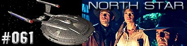
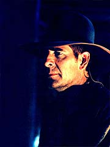
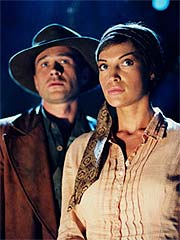
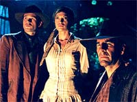

|
Enterprise
Temporada 3

Anlise do episdio por
Salvador Nogueira



|
MANCHETE
DO EPISDIO |
Comentrios:   
O que esse episdio da segunda temporada est fazendo na terceira? Esse basicamente o problema de
"North Star", que de resto lembra muito o estilo narrativo de alguns episdios da
Srie Clssica.
No expressamente proibido fazer episdios totalmente desvinculados da premissa Xindi durante o terceiro ano. J aconteceu antes, em segmentos como
"Extinction" ou "Impulse". Mas em nenhum momento um episdio se desvinculou tanto do contexto geral da srie quanto
"North Star".
At compreensvel que a Enterprise decida fazer um pequeno desvio em sua caa aos Xindis para descobrir como alguns humanos foram parar num planeta imerso na Extenso Dlfica. Por outro lado, completamente descabido que Archer no s perca tempo interferindo nos assuntos desses humanos, mas arriscando sua vida para trazer um pouco de civilizao quele povoado.
Se fizermos o devido procedimento de suspenso da descrena (que no um pequeno esforo neste caso, bom que se diga), de resto o episdio at que apresenta elementos interessantes. sempre bom ter uma mudana de ares, num episdio com bom nmero de cenas em locao, cavalos e muitos personagens convidados, e
"North Star" abusa desses elementos.
Em termos narrativos, o episdio lembra bastante, tanto no contedo como na gritante "moral da histria", os segmentos da
Srie Clssica. Temos aqui um tpico manifesto contra o preconceito, a perpetuao de velhos conflitos e a necessidade de a humanidade seguir evoluindo para um estado de maior harmonia, civilidade e fraternidade csmica.
Alm de tudo, tambm lembra a Srie Clssica na (proposital) economia de maquiagem. No s a maioria dos personagens realmente humana, como os poucos que no so tm diferenas craniais bem sutis --os Skagarans, at para enfatizar a mensagem do contra-senso do preconceito, so extremamente similares aos humanos.
O tema do Velho Oeste tambm recorrente em Jornada nas
Estrelas. S para citar os dois exemplos mais famosos, temos "Spectre of the
Gun", da Srie Clssica, e "A Fistful of
Datas", de A Nova Gerao, que seguem a mesma temtica. Felizmente, os enredos so bem diferentes entre si.
Quanto aos personagens, no h muito o que falar --trata-se de um segmento totalmente orientado para a histria, e a tripulao da Enterprise tem pouco a ganhar, em termos de crescimento interior. A direo de David Straiton se sobressai nas cenas de ao, e o momento mais destacado do episdio o clmax, com a bonita descida do shuttlepod no meio da praa central e o posterior tiroteio entre os homens de Bennings e a tripulao da NX-01.
T'Pol - "Do you have any experience riding one of these animals?"
("Voc tem experincia cavalgando em algum desses animais?")
Bethany - "All the things humanity has accomplished, building ships like this and traveling to other worlds, and we're still down there shooting each other."
("Todas as coisas que a humanidade conseguiu, construir naves como essa e viajar a outros mundos, e ainda estamos l embaixo atirando uns nos outros.")
 David A. Goodman contou sobre as origens da histria. "Esse episdio veio de Brannon me desafiando a criar uma histria com uma 'Terra paralela' com as que eles tinham na
Srie Clssica, mas uma que se encaixassem em Enterprise. Minhas favoritas da
Srie Clssica eram 'A Piece of the Action' e 'Patterns of
Force', uma vez que no dependiam do impossvel para explicar coisas como a 'Lei Hodgkins de Desenvolvimento Planetrio Paralelo'. Foi realmente inspirado por esses episdios, e como um cenrio de faroeste, eu fiz uma homenagem a
'Spectre of the Gun' dando a um dos aliengenas o nome de Cronin."
David A. Goodman contou sobre as origens da histria. "Esse episdio veio de Brannon me desafiando a criar uma histria com uma 'Terra paralela' com as que eles tinham na
Srie Clssica, mas uma que se encaixassem em Enterprise. Minhas favoritas da
Srie Clssica eram 'A Piece of the Action' e 'Patterns of
Force', uma vez que no dependiam do impossvel para explicar coisas como a 'Lei Hodgkins de Desenvolvimento Planetrio Paralelo'. Foi realmente inspirado por esses episdios, e como um cenrio de faroeste, eu fiz uma homenagem a
'Spectre of the Gun' dando a um dos aliengenas o nome de Cronin."
 Glenn Morshower apareceu em dois episdios de
A Nova Gerao, como o alferes Burke em "Peak Performance" e como Orton em
"Starship Mine"; ele tambm interpretou um guarda em "Resistance"
(Voyager) e um navegador em "Generations". Esse seu quinto papel em
Jornada.
Glenn Morshower apareceu em dois episdios de
A Nova Gerao, como o alferes Burke em "Peak Performance" e como Orton em
"Starship Mine"; ele tambm interpretou um guarda em "Resistance"
(Voyager) e um navegador em "Generations". Esse seu quinto papel em
Jornada.
 James Parks apareceu como Vel em
"The Chute" (Voyager). Tom Dupont j havia trabalhado fora de cena em
"Jornada nas Estrelas V: A ltima Fronteira", como um paramdico nas cenas do Parque Yosemite.
James Parks apareceu como Vel em
"The Chute" (Voyager). Tom Dupont j havia trabalhado fora de cena em
"Jornada nas Estrelas V: A ltima Fronteira", como um paramdico nas cenas do Parque Yosemite.
 Scott Bakula comentou sobre o segmento: "Descobrimos uma civilizao espalhada por esse planeta, em que humanos foram abduzidos da Terra 300 anos atrs. Isso, claro, 300 anos antes de 2153. Ento eles eram um trem de vages, sua tecnologia no era desenvolvida. Acabamos no Velho Oeste, com cintos e seis armas, e o que faz o episdio interessante a relao entre os humanos nos planetas e os Skagarans, a raa que originalmente os abduziu".
Scott Bakula comentou sobre o segmento: "Descobrimos uma civilizao espalhada por esse planeta, em que humanos foram abduzidos da Terra 300 anos atrs. Isso, claro, 300 anos antes de 2153. Ento eles eram um trem de vages, sua tecnologia no era desenvolvida. Acabamos no Velho Oeste, com cintos e seis armas, e o que faz o episdio interessante a relao entre os humanos nos planetas e os Skagarans, a raa que originalmente os abduziu".
 As cenas de faroeste do episdio foram filmadas no estacionamento da Universal Studios.
As cenas de faroeste do episdio foram filmadas no estacionamento da Universal Studios.
Escrito por David A. Goodman
Direo de David Straiton
Exibido em 12/11/2003
Produo:
061
Elenco:
Scott
Bakula como Jonathan Archer
Jolene Blalock como
T'Pol
John Billingsley
como Phlox
Anthony Montgomery
como Travis Mayweather
Connor Trinneer como
Charlie 'Trip' Tucker III
Dominic Keating como
Malcolm Reed
Linda Park como Hoshi Sato
Elenco convidado:
Emily Bergl como Bethany
Glenn Morshower como xerife MacReady
James Parks como assistente Bennings
Paul Rae como barman
Steven Klein como Draysik
Gary Bristow como homem do estbulo
Mike Watson como Skagaran
Alexandria M. Salling como garota Skagaran
Jon Baron como garoto Skagaran
Jeff Eith como caubi 1
Cliff McLaughlin como caubi 2
Tom Dupont como caubi 3
Dorenda Moore como MACO 1
Kevin Derr como MACO 2